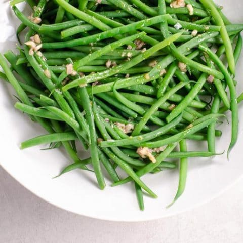

Green Beans

Simple boiled green beans
A quick and easy side of vegatables.
Quick and cheap to make
Required Ingredients
Green beans
Butter
Table salt
Recipe Steps
- Bring water to a roiling boil
- Salt water to the water
- Add the green beans to the boiling water (boil all the vitamins outta them )
- let boil for about 5 mins at medium heat
- drain water and plate
- lightly coat with melted butter (optional)